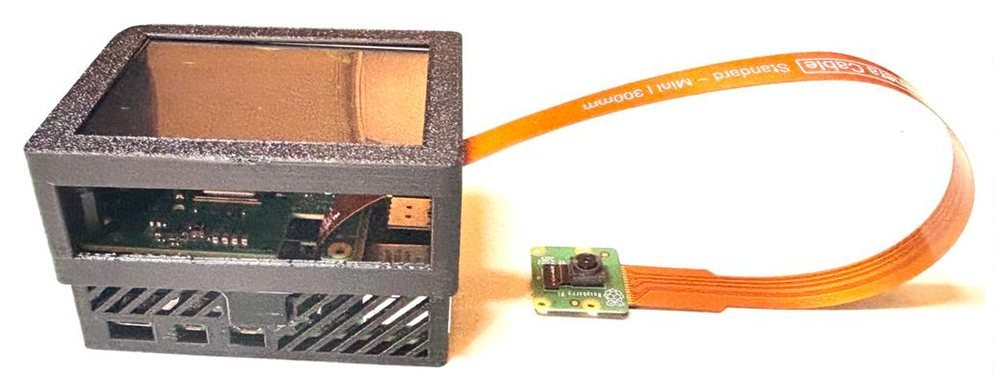
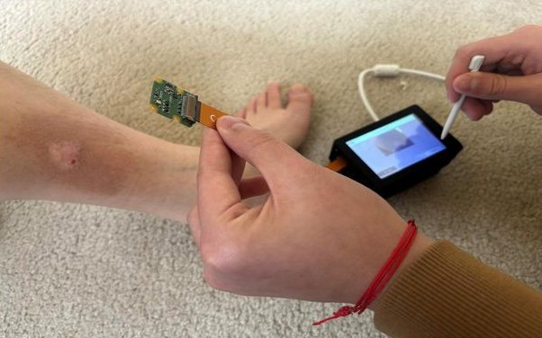

Working today
Web app
Runs in a modern browser on the clinic's computer or phone. Nothing to install, and the whole model loads once and then works offline.
Nevio helps primary care clinics triage skin spots. It reads a dermoscopic photo and the patient's details together, the way a dermatologist would, and gives one clear recommendation in about a second. It runs on the clinic's own computer, so photos never leave the room.
Research stage. Nevio is not FDA-cleared. Free research pilots with Pennsylvania clinics begin in 2027.

The black line is the 27.8% referral cutoff.
The first person to see a worrying spot is usually a family doctor, nurse practitioner or physician assistant with little dermoscopy training. They can refer almost everything, which floods the dermatology waitlist, or judge it alone and risk missing an early melanoma.
Nevio is built for that moment: a fast, private second look that helps sort the spots that need a dermatologist this week from the ones that can wait.
Source: American Cancer Society[1]
Dermatologists don't judge a spot from the picture alone. Age, sex and body site change what a spot means. Most skin AI only sees the photo. Nevio reads both.
On this melanoma in situ, the photo alone scored low for melanoma and looked most like another kind of lesion. With the patient's details added, the melanoma score rose to 82%, well above the cutoff, and Nevio recommended an urgent referral.
Inputs: the photo, plus age 65, female, head or neck, looks like a mole.
One real case, shown to explain how Nevio works. Results across 9,080 test images are under Evidence.
Three steps during a normal visit, with no new computer and no upload.
The clinician takes a dermoscopic photo through a clip-on polarized dermatoscope (about $109) on a computer or phone the clinic already has.
Age, sex, body site, skin type, size, and whether it looks like a mole. Nevio turns these into 17 inputs for its patient network.
In about a second, with no internet needed:
The clinician always decides. Nevio is a triage aid. It shows where on the spot it focused and prints a referral note, but it does not diagnose and never replaces clinical judgment or a biopsy.
Runs in a modern browser on the clinic's computer or phone. Nothing to install, and the whole model loads once and then works offline.


A small Raspberry Pi 5 unit with its own touchscreen and camera, for exam rooms without a spare computer. Planned as a low-cost rental.
We tested Nevio on biopsy-confirmed images it never saw in training. These are research results, not a clinical trial and not FDA review.
Most medical AI runs in a data center. Nevio's whole model is about 21 MB, smaller than a few phone photos, so it runs right in the browser.
We're building toward FDA review the careful way: real clinics first, more diverse images, then a formal study.
Tested on 9,080 unseen images. Browser app and exam-room prototype working.
Free research pilots in 15 clinics near Reading and Chester County, PA, adding images of darker skin. Request an FDA pre-submission meeting.
A reader study with clinicians, then an FDA submission.
A flat monthly price per clinic site, never per scan.
Starting in 2027, we're running free research pilots with primary care practices and community health centers in southeastern Pennsylvania.
Nevio is not FDA-cleared and is not for sale. Pilots are research: we compare Nevio's recommendations with dermatologists' decisions and biopsy results.
Request a pilotFor years, Jason's mom had a growth on her leg and waited, even with good insurance, to learn whether it was dangerous. Nevio started as his research project to shorten that wait. The four of us met at a summer camp and are building it together.
Trained Nevio's model and built the browser app and exam-room station.
Leads finances, the pitch and problem research.
Leads operations, market sizing and competitive analysis.
Leads marketing, go-to-market and fundraising.
Something else on your mind? Ask in the pilot request and we'll answer on the call.
No. Nevio is an investigational research tool. It is not FDA-cleared or approved, and it is not for sale. We plan to pursue FDA review after clinical testing. Until then it is used only in research pilots, where clinicians make every decision.
No. It gives a triage recommendation: refer urgently, refer for review, or routine follow-up. Diagnosis stays with clinicians and biopsy.
Nowhere. The model runs in the browser on the clinic's device, so photos and patient details aren't uploaded to us.
A computer or phone with a modern browser and a clip-on polarized dermatoscope. Pilot clinics receive a dermatoscope to use during the study.
Not equally yet, and we want to be upfront about it. Public skin image collections have few images of darker skin, so ours does too. Adding those images through pilots is one of our main goals.
Pilots are free. We'll only charge after FDA clearance, with a flat monthly price per clinic site rather than per scan.
Tell us about your clinic. There's no cost and no commitment.
Please don't include any patient information in this form. We use your details only to reply about Nevio pilots.